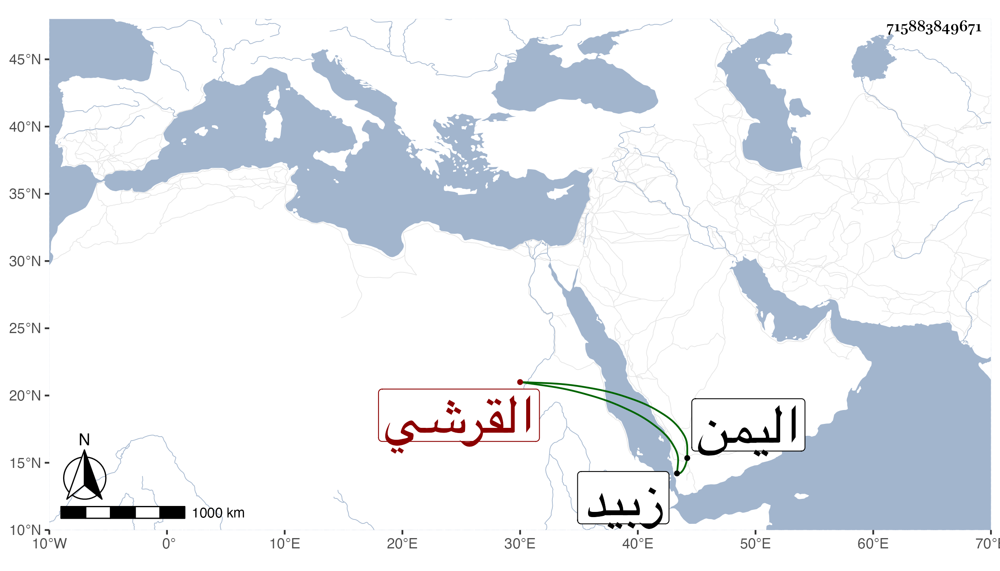

0902Sakhawi.DawLamic.ITO20230111-ara1.EIS1600.715883849671
Biography ID: 715883849671
884
علي بن عمر بن إبراهيم بن أبي بكر بن محمد بن عبد الله بن محمد القرشي نسبة للقرشية بالقرب من زبيد . شيخ اليمن ممن ذكر بالولاية والأخذ عن ناصر الدين بن الميلق ولذا نسبوه شاذليا وأنجب عبد الرؤوف وعبد المحسن وغيرهما كأبي الفتح والد عبد المغني . مات سنة ثمان وعشرين .
